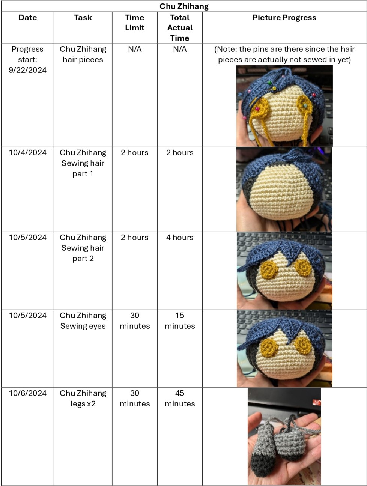
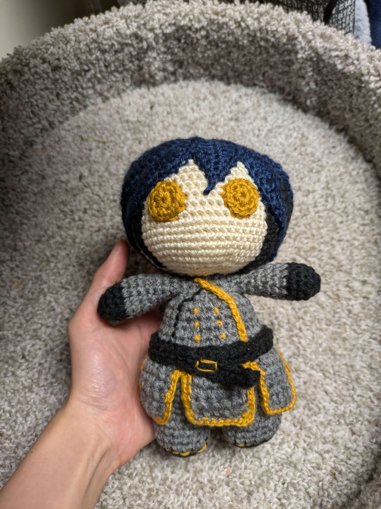
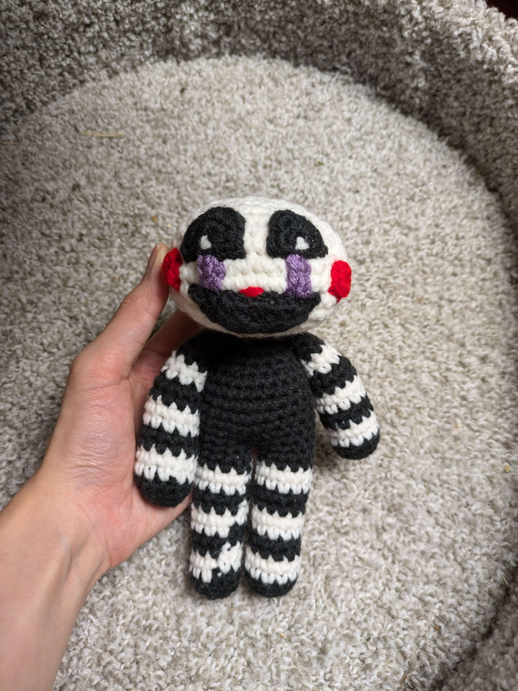

Introduction
Hi! Welcome! I am Xing, currently a senior at The Ohio State University. This website is for my ESEPSY 1259 course project. Thank you for visiting!
Goal
Circumstances or situations in my life that made me want to change
I think every person has experienced a task which they are responsible for but hates the thought of completing it. Whether it be normal chores such as doing the dishes, laundry, grocery shopping, to more critical responsibilities like filing taxes, I think most people would agree that they have a certain responsibility that they procrastinate in. This is what I hope to change. I, in particular, have been taking crochet commissions, however, I have been procrastinating completing them due to my hatred towards sewing. I hope this project will help change that.
SMART goal
One goal for this semester is to complete my crochet commissions. By completing my commissions, I hope to learn how to apply these strategies in the real world and earn additional income for my college expenses.
Book
52 Small Changes for the Mind by Brett Blumenthal
Why I chose this book
In all honesty, one of the main reasons why I chose this book was because the cover caught my attention. However, it is important to note that another reason I chose this book is because there are chapters in the book that focus on productivity such as rewarding yourself, minimizing screen time, scheduling to-dos, etc.
How it is connected to my goal
Finding time and task management strategies will help encourage me to complete my commissions efficiently and hopefully discourages burnout and procastination.
Strategies/ideas from the book
Put Time in a Box
How it worked
Setting Time Limits for Tasks, using that time for something specific before moving on.
Progress?
It was helpful to put time in a box to prevent burnout. It massively prevented me from giving up for the whole day.
Schedule To-Dos
How it worked
Scheduling or planning prevents stress by double-booking and also includes non-task times.
Progress?
It was more helpful to have a mental schedule than it is to have a physical one, in my opinion. However, it is still important to know the tasks you need to complete by a certain time.
Tracking
Put Time in a Box
I will be tracking via task, time limit, and the actual time it took (which would just be how much time I took in total with rest time in between).
Schedule To-Dos
I will be tracking via date and pictures, in conjunction to the already existing table shown above: (This is the progress I’ve already made before project tracking).
Results
Final Results
Johann Chu/Chu Zhihang from Dragon Raja
Client #1
Specifications: Captain Johann
Marionette from Five Nights at Freddy's
Client #2
Specifications: Cute
Raven from Teen Titans
Client #2
Specifications: Removable Cape, and free flowing belt and wrist cuffs. Purple cape and boots, with Mohair Blue for Hair
Major Takeaways and/or Advice
- It is important to complete your tasks, but it is more important to be mindful of your own well-being, time, and stress. Even though I had missed or procrastinated a few days, sometimes missing my goals, I was able to complete them in time. There is no need to stress over something you can't control, and failing is better than never trying.
- Be more mindful of how time works, and make sure the schedule you make for yourself is flexible and realistic.
- Breaking down tasks should be done realistically, based on your goal, as it is not universally applicable.
- It is helpful to be aware of the progress you have made, to prevent discouragement and boost your sense of progress.
- The ability to estimate how long you would need to complete a task is very important and knowing how to properly gauge your capabilities is important to properly utilize the methods above. (Specially making time boxes)
- Always be aware of your schedules. One way to keep you on track is by setting reminders or alarms. I found making alarms is more helpful than putting things in my calendar or schedule, as it creates a feeling of urgency.
- Overall, it was very fulfilling to be able to complete my tasks and see the progress and effort I put in. I would recommend this to anyone who may have feelings of self-doubt in ability or path.
In the end, I realized although it may seem difficult to start your first stitch into any project, as long as you prepare enough, anything is possible
Citations
Blumenthal, B. (2015). 52 small changes for the mind: Improve memory, minimize stress, increase productivity, boost happiness. Chronicle Books.